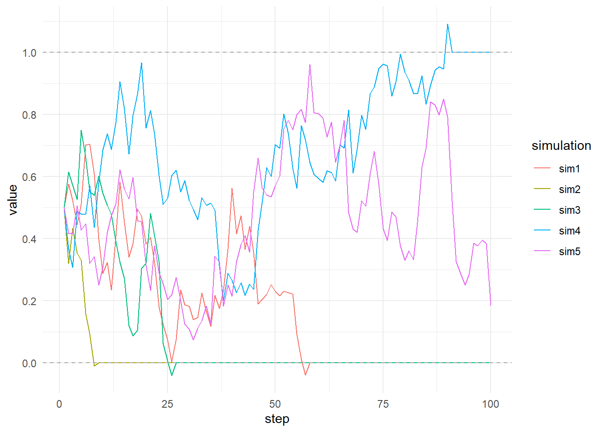

Code
# define function of sampling till it reaches the "decision boundary" of
# 0 or 1
sample_till_boundry <- function(out, input) {
if (out >= 1){
return(1)
} else if (out <= 0) {
return(0)
}
out + rnorm(1, sd = 0.1)
}
# 1:100 %>% accumulate(sample_till_boundry, .init = 0.5) %>% plot(.)
n_lines <- 5
n_steps <- 100
map(1:n_lines, \(i) 1:(n_steps-1)) %>%
set_names(paste0("sim", 1:n_lines)) %>%
map(\(l) accumulate(l, sample_till_boundry, .init = 0.5)) %>%
map(\(x) tibble(value = x, step = 1:n_steps)) %>%
list_rbind(names_to = "simulation") %>%
ggplot(aes(x = step, y = value)) +
geom_line(aes(color = simulation)) +
geom_hline(yintercept = 1, color = "darkgray", linetype = 2) +
geom_hline(yintercept = 0, color = "darkgray", linetype = 2) +
scale_y_continuous(breaks = scales::pretty_breaks(n = 5))